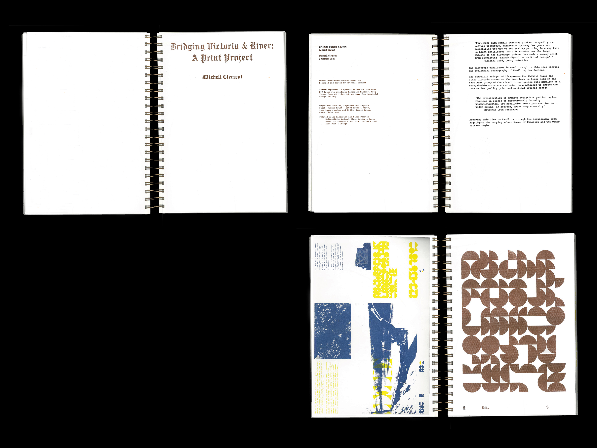
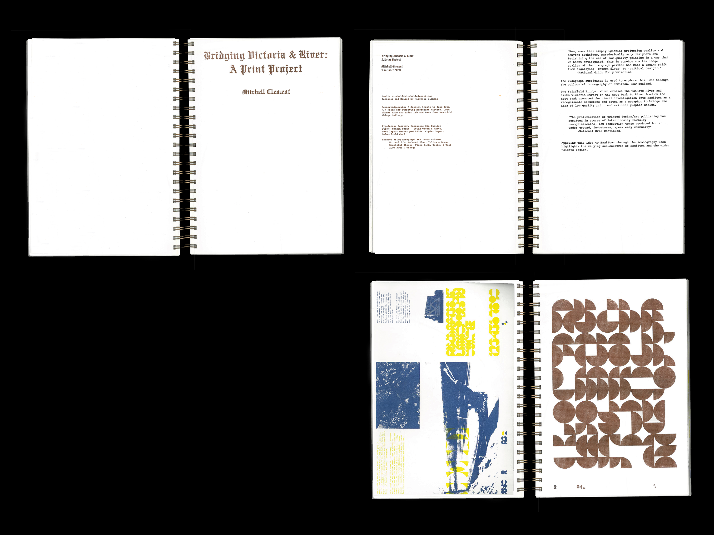

The Perry Line
Perry Poster
Dulcie Typeface
Goon
Whitecliffe Standard
2001: A Space Odyssey
Twelve Hamilton Houses
Bridging Victoria & River
Fairfield Bridge Triptych
LEVEL11 Grad Show 2020
Katherine Jack Lookbook
Callum Thomas (WIP)
JACKK. (WIP)
Season's Greetings 2021
Perry Poster
Dulcie Typeface
Goon
Whitecliffe Standard
2001: A Space Odyssey
Twelve Hamilton Houses
Bridging Victoria & River
Fairfield Bridge Triptych
LEVEL11 Grad Show 2020
Katherine Jack Lookbook
Callum Thomas (WIP)
JACKK. (WIP)
Season's Greetings 2021
About
Contact
 



 210x297mm
210x297mmRisograph (Brown, Yellow, Federal Blue, Orange, Pink, Teal & Blue), Inkjet
“Now, more than simply ignoring production quality and denying technique, paradoxically many designers are fetishizing the use of low quality printing in a way that we hadnt anticipated. This is somehow now the image quality of the risograph printer has made a sneaky shift from signifying ‘church flyer’ to ‘critical design’.” -National Grid, Jonty Valentine
The risograph duplicator is used to explore this idea through the colloquial iconography of Hamilton, New Zealand. The Fairfield Bridge, which crosses the Waikato River and links Victoria Street on the West bank to River Road on the East Bank prompted the visual investigation into Hamilton as a recognisable structure and acted as a metaphor to bridge the idea of low quality print and critical graphic design.
“The proliferation of printed design/art publishing has resulted in stores of intentionally formally unsophisticated, low-resolution texts produced for an under-ground, in-between, speak easy community” -National Grid Continued.
Applying this idea to Hamilton through the iconography used highlights the varying sub-cultures of Hamilton and the wider Waikato region.